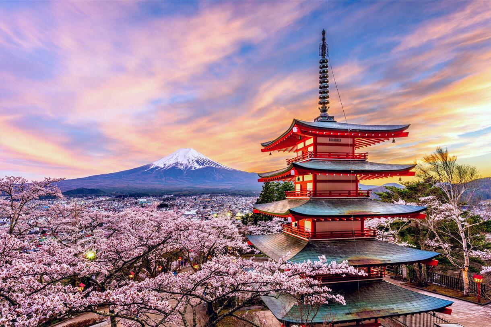
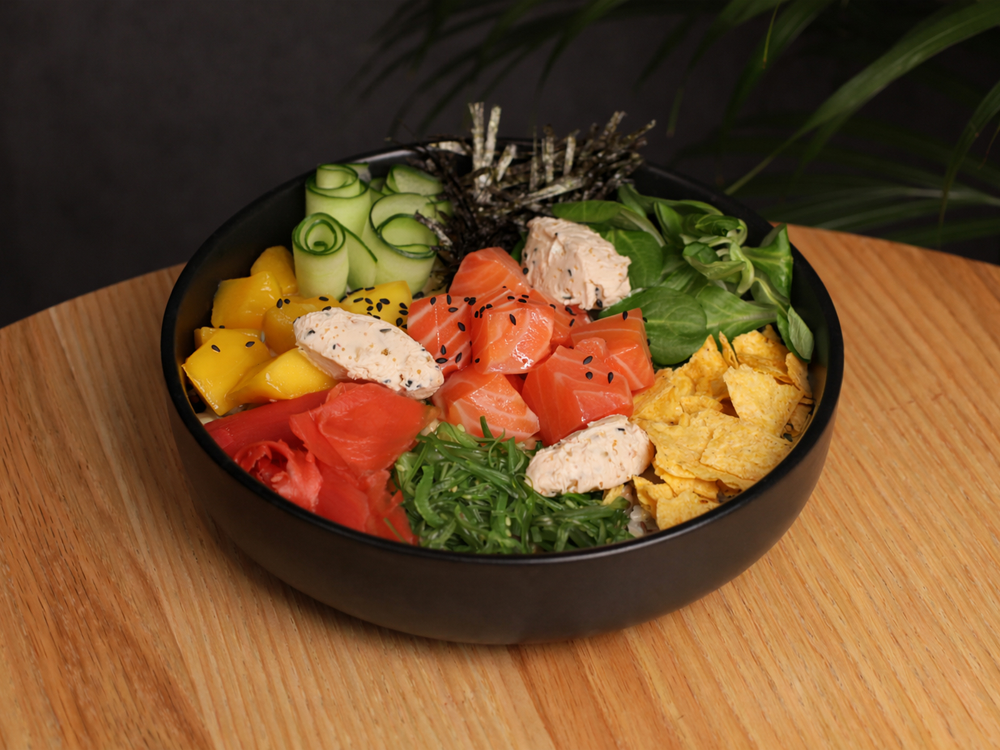
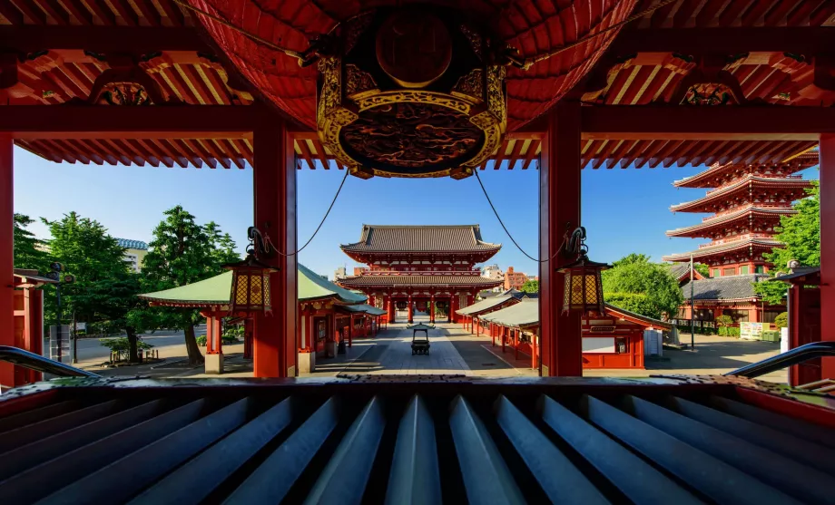

Визначні пам'ятки
Токіо вражає поєднанням сучасних районів і традиційних місць, а неподалік міста височіє гора Фудзі.

Кухня та гастрономія
Справжні суші та рамен перевернули наше уявлення про їжу.

Культура та традиції
Храми поруч із хмарочосами створюють унікальну атмосферу.

Особисті історії
Найбільше запам'яталася прогулянка Акіхабарою.